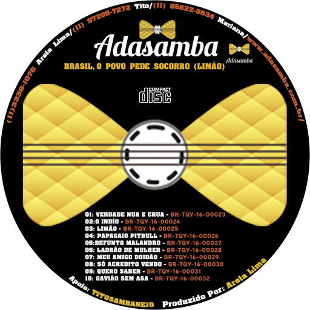

AdaSamba
Samba, Pagode e Música Popular Brasileira
Contrate o AdaSambaShows AdaSamba
Samba, pagode e MPB para celebrar a música brasileira!
Artista independente, construiu sua trajetória por meio da música, das apresentações ao vivo e do contato direto com o público.
AdaSamba sempre combinando tradição, emoção e alegria.
Repertório e composições
Entre as músicas registradas no álbum Brasil o Povo Pede Socorro (Limão), lançado em 2014, estão:
- Limão
- O Índio
- Verdade Nua e Crua
- Gavião Sem Asa
O repertório dos shows pode reunir composições autorais, clássicos do samba e sucessos do pagode, de acordo com a proposta de cada evento.
Formatos de apresentação
Os shows podem ser adaptados para bares, casas de samba, festas particulares, eventos corporativos, festivais e programações culturais.
A formação musical e a estrutura da apresentação são definidas conforme as necessidades do evento.
Contrate AdaSamba
Leve a energia do samba ao seu evento! Entre em contato para consultar disponibilidade, repertório, formatos e valores.
Músicas do AdaSamba
Conheça o álbum Brasil, O Povo Pede Socorro (Limão). Ao comprar sua música, você fortalece o trabalho de um artista 100% independente.
Brasil, O Povo Pede Socorro (Limão)
Álbum completo · 10 faixas · AdaSamba
⬇ BAIXAR ÁLBUM COMPLETOSua compra ajudará a valorizar o trabalho de um artista 100% independente.
02. O Índio
Clique no rótulo para baixar03. Limão
Clique no rótulo para baixar04. Papagaio Pitbull
Clique no rótulo para baixar05. Defunto Malandro
Clique no rótulo para baixar06. Ladrão de Mulher
Clique no rótulo para baixar07. Meu Amigo Doidão
Clique no rótulo para baixar08. Só Acredito Vendo
Clique no rótulo para baixar09. Quero Saber
Clique no rótulo para baixar10. Gavião Sem Asa
Clique no rótulo para baixarCiência & Samba
A música faz parte da nossa história, das nossas emoções e da nossa convivência. Conheça o que a ciência investiga sobre o cérebro e descubra a história do samba e do pagode brasileiros.
Conteúdo educativo baseado em estudos e fontes
públicas. Os efeitos da música variam conforme
a pessoa e o contexto. Música não substitui
tratamento médico ou psicológico.
1. A música e o cérebro
Prazer e emoção
Em 2011, pesquisadores observaram liberação de dopamina em regiões cerebrais relacionadas à recompensa durante experiências de intensa emoção musical. Isso ajuda a explicar por que certas músicas provocam prazer e arrepios.
Ler o estudo científicoMúsica e estresse
Uma meta-análise de 2020 reuniu 104 ensaios randomizados e 9.617 participantes. Os resultados indicaram efeitos favoráveis de intervenções musicais sobre indicadores de estresse, embora os efeitos variem entre estudos e situações.
Consultar a meta-análiseMusicoterapia e saúde mental
Uma revisão Cochrane encontrou resultados favoráveis para a musicoterapia como complemento do tratamento habitual em pessoas com depressão. Isso não significa que ouvir qualquer música seja equivalente a uma terapia.
Ler a revisão CochraneArte, saúde e bem-estar
A Organização Mundial da Saúde reuniu evidências de mais de 3.000 estudos sobre artes, saúde e bem-estar ao longo da vida. O relatório abrange diversas artes, não apenas a música.
Consultar o relatório da OMS2. Como surgiu o samba?
As raízes afro-brasileiras
O samba de roda desenvolveu-se especialmente no Recôncavo Baiano, ligado às tradições de comunidades negras. Reúne canto, dança, poesia, palmas e instrumentos.
O IPHAN registrou o Samba de Roda como patrimônio cultural brasileiro em 2004. A UNESCO o reconheceu internacionalmente em 2008.
Conhecer o registro da UNESCOO samba urbano carioca
No início do século XX, rodas, quintais e encontros de comunidades negras do Rio de Janeiro contribuíram para o desenvolvimento do samba urbano. Tia Ciata e outras tias baianas tiveram papel importante nesses espaços.
Ler sobre Donga e o samba urbano1916–1917: Pelo Telefone
A composição associada a Donga e Mauro de Almeida tornou-se um marco fonográfico do samba, com lançamento em 1917. Entretanto, o samba já existia antes da gravação e sua história envolve criação coletiva e debates sobre autoria.
Consultar a Biblioteca NacionalPatrimônio cultural brasileiro
Em 2007, o IPHAN registrou três matrizes do samba do Rio de Janeiro: partido-alto, samba de terreiro e samba-enredo.
Consultar o registro do IPHAN3. Como o pagode se desenvolveu?
As rodas do Cacique de Ramos
As rodas de samba do Cacique de Ramos, no Rio de Janeiro, foram importantes para a renovação do samba a partir do final dos anos 1970.
Fundo de Quintal e o pagode moderno
O Fundo de Quintal teve papel importante na consolidação dessa linguagem musical, com novas combinações instrumentais e arranjos que influenciaram gerações.
Ler artigo acadêmico sobre o pagode4. Desafio AdaSamba
Responda a três perguntas sobre ciência e história da música. Cada resposta correta vale 10 pontos. Pontuação máxima: 30 pontos.
Pergunta 1 de 3
Qual substância cerebral foi associada à experiência de intensa emoção musical?
Pontuação: 0 / 30
5. Fontes para continuar aprendendo
- PubMed — Dopamina e emoção musical
- PubMed — Música e estresse
- OMS — Artes, saúde e bem-estar
- IPHAN — Samba de Roda
- IPHAN — Matrizes do Samba
Conteúdo educativo do AdaSamba. Os textos foram redigidos em linguagem própria e remetem às fontes originais. Consulte os estudos para conhecer seus métodos, limitações e conclusões completas.